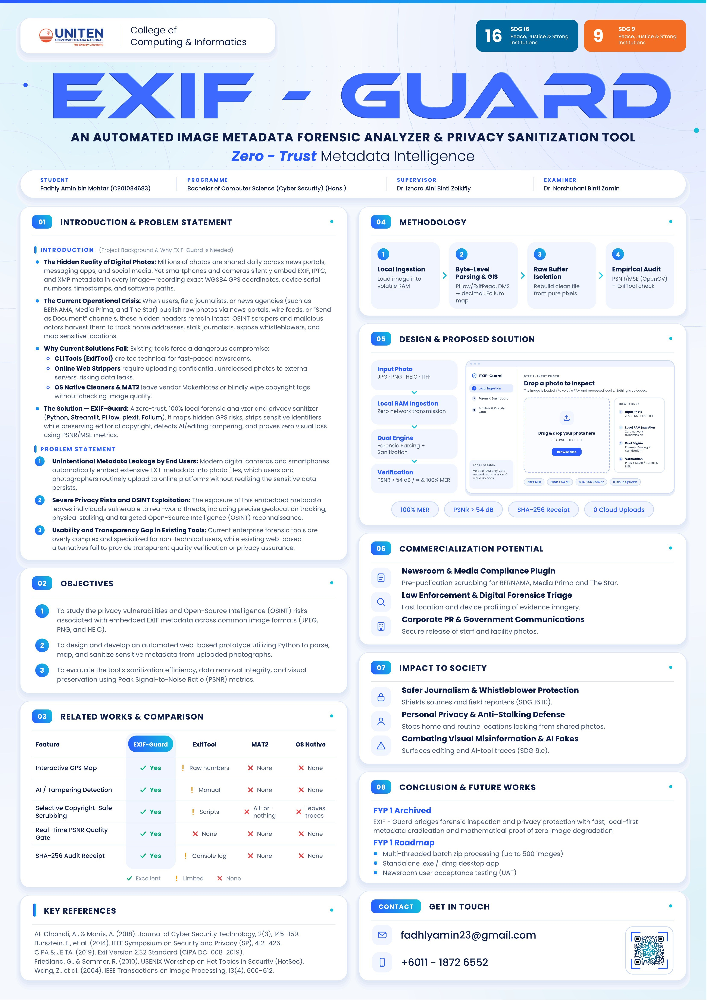

Featured Project
EXIF-Guard Poster
An automated image metadata forensic analyzer & privacy sanitization tool: Zero-Trust Metadata Intelligence.


An automated image metadata forensic analyzer & privacy sanitization tool: Zero-Trust Metadata Intelligence.
